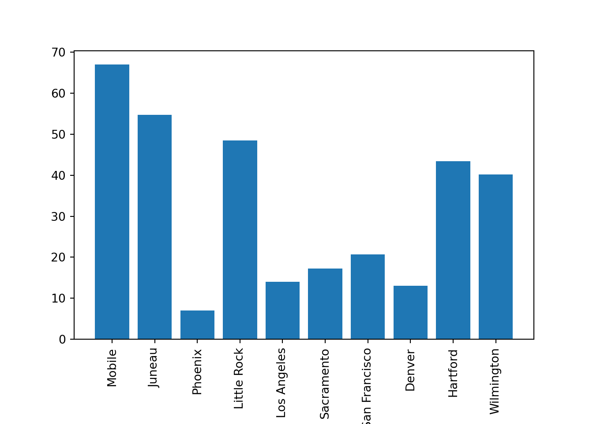

Python
Getting started
Python on Scholar
Each year we provide students with a working Python kernel that students are able to select and use from within https://notebook.scholar.rcac.purdue.edu/ as well as within an Rmarkdown document in https://rstudio.scholar.rcac.purdue.edu/. We ask that students use this kernel when completing all Python-related questions for the course. This ensures version consistency for Python and all packages that students will use during the academic year. In addition, this enables staff to quickly modify the Python environment for all students should the need arise.
Let's configure this so every time you access https://notebook.scholar.rcac.purdue.edu/ or https://rstudio.scholar.rcac.purdue.edu/, you will have access to the proper kernel, and the default version of python is correct. Navigate to https://rstudio.scholar.rcac.purdue.edu/, and login using your Purdue credentials. In the menu, click Tools > Shell....
You should be presented with a shell towards the bottom left. Click within the shell, and type the following followed by pressing Enter or Return:
/class/datamine/apps/runme
After executing the script, in the menu, click Session > Restart R.
In order to run Python within https://rstudio.scholar.rcac.purdue.edu/, log in to https://rstudio.scholar.rcac.purdue.edu/ and run the following in the Console or in an R code chunk:
datamine_py()
install.packages("reticulate")The function datamine_py "activates" the Python environment we have setup for the course. Any time you want to use our environment, simply run the R function at the beginning of any R Session, prior to running anything Python code chunks.
To test if the Python environment is working within https://rstudio.scholar.rcac.purdue.edu/, run the following in a Python code chunk:
import sys
print(sys.executable)The python executable should be located in the appropriate folder in the following path: /class/datamine/apps/python/.
The runme script also adds a kernel to the list of kernels shown in https://notebook.scholar.rcac.purdue.edu/.
To test if the kernel is available and working, navigate to https://notebook.scholar.rcac.purdue.edu/, login, click on New, and select the kernel matching the current year. For example, you would select f2020-s2021 for the 2020-2021 academic year. Once the notebook has launched, you can confirm the version of Python by running the following in a code cell:
import sys
print(sys.executable)The python executable should be located in the appropriate folder in the following path: /class/datamine/apps/python/.
If you already have a a Jupyter notebook running at https://notebook.scholar.rcac.purdue.edu/, you may need to refresh in order for the kernel to appear as an option in Kernel > Change Kernel.
If you would like to use the Python environment that is put together for this class, from within a terminal on Scholar, run the following:
source /class/datamine/apps/python.shThis will load the environment and python will launch our environment's interpreter.
A note on indentation
In most languages indentation is for appearance only. In Python, indentation is very important. In a language, like R, for instance, a block of code is defined by curly braces. For example, the curly braces indicate the bounds of the if statement in the following code chunk:
my_val <- TRUE
if (my_val) {
print("This is inside the bounds of the if statement, and will be evaluated because my_val is TRUE.")
print("This too is inside the bounds of the if statement, and will be evaluated")
}
print("This is not longer inside the bounds of the if statement.")In Python, the equivalent would be:
my_val = True
if my_val:
print("This is inside the bounds of the if statement, and will be evaluated because my_val is TRUE.")
print("This too is inside the bounds of the if statement, and will be evaluated")
print("This is not longer inside the bounds of the if statement.")As you can see, there are no curly braces to indicate the bounds of the if statement. Instead, the level of indentation is used. This applies for for loops as well:
values = [1,2,3,4,5]
for v in values:
print(f"v: {v}")## v: 1
## v: 2
## v: 3
## v: 4
## v: 5Variables
Variables are declared just like in R, but rather than using <- and ->, Python uses a single = as is customary for most languages. You can declared variables like this:
my_var = 4Here, we declared a variable with a value of 4.
Important note: Actually this is technically not true. Numbers between -5 and 256 (inclusive) are already pre-declared and exist within Python's memory before you assigned the value to my_var. The = operator simply forces my_var to point to that value that already exists! That is right, my_var is technically a pointer.
One extremely important distinction between declaring variables in Python vs. in R is what is actually happening under the hood. Take the following code:
my_var = 4
new_var = my_var
my_var = my_var + 1
print(f"my_var: {my_var}\nnew_var: {new_var}")## my_var: 5
## new_var: 4my_var = [4,]
new_var = my_var
my_var[0] = my_var[0] + 1
print(f"my_var: {my_var}\nnew_var: {new_var}")## my_var: [5]
## new_var: [5]Here, the first chunk of code behaves as expected because ints are immutable, meaning the values cannot be changed. As a result, when we assign my_var = my_var + 1, my_var's value isn't changing, my_var is just being pointed to a different value of 5, which is not where new_var points. new_var still points to the value of 4.
The second chunk however is dealing with a mutable list. We first assign the first value of our list to a value of 4. Then we assign my_var to new_var. This does not copy the values of my_var to new_var, but rather new_var now points to the same exact object. Then, when we increment the first value in my_var, that same change is reflected when we print the value in new_var, because new_var and my_var are the same object, i.e. new_var is my_var.
An excellent article that goes into more detail can be found here.
None
None is a keyword used to define a null value. This would be the Python equivalent to R's NULL. If used in an if statement, None represents False. This does not mean None == False, in fact:
print(None == False)## FalseAs you can see, although None can represent False in an if statement, they are not equivalent.
bool
A bool has two possible values: True and False. It is important to understand that technically:
print(True == 1)## Trueprint(False == 0)## TrueWith that being said, True is not equal to numbers greater than 1:
print(True == 2)## Falseprint(True == 3)## FalseWith that being said, numbers not equal to 0 evaluate to True when used in an if statement:
if 3:
print("3 evaluates to True")
## 3 evaluates to Trueif 4:
print("4 evaluates to True")
## 4 evaluates to Trueif -1:
print("-1 evaluates to True")## -1 evaluates to Truestr
str are strings in Python. Strings are "immutable sequences of Unicode code points". Strings can be surrounded in single quotes, double quotes, or triple quoted (with either single or double quotes):
print(f"Single quoted text is type: {type('test')}")## Single quoted text is type: <class 'str'>print(f'Double quoted text is type: {type("test")}')## Double quoted text is type: <class 'str'>print(f"Triple quoted with single quotes: {type('''This is some text''')}")## Triple quoted with single quotes: <class 'str'>print(f'Triple quoted with double quotes: {type("""This is some text""")}')## Triple quoted with double quotes: <class 'str'>Triple quoted strings can span multiple lines. All associated whitespace will be incorporated in the string:
my_string = """This text
spans multiple
lines."""
print(my_string)## This text
## spans multiple
## lines.But, this would cause an error:
my_string = "This text,
will throw an error"
print(my_string)But, you could make it span multiple lines by adding a \, but newlines won't be maintained:
my_string = "This text, \
will throw an error"
print(my_string)## This text, will throw an errorint
int's are whole numbers. For instance:
my_var = 5
print(type(my_var))## <class 'int'>int's can be added, subtracted, and multiplied without changing types. With that being said, division of 2 int's results in a float regardless of whether or not the result of the division is a whole number or not:
print(type(6+2))## <class 'int'>print(type(6-2))## <class 'int'>print(type(6*2))## <class 'int'>print(type(6/2))## <class 'float'>Similarly, any calculation between an int and float results in a float:
print(type(6+2.0))## <class 'float'>print(type(6-2.0))## <class 'float'>print(type(6*2.0))## <class 'float'>print(type(6/2.0))## <class 'float'>float
float's are floating point numbers, or numbers with decimals.
my_var = 5.0
print(type(my_var))## <class 'float'>float's can be converted back to int's using the int function. This coercion causes the float to be truncated, regardless of how close to the "next" number the float is:
print(int(5.5))## 5print(int(5.49))## 5print(int(5.51))## 5print(int(5.99999))## 5complex
complex's represent complex numbers. j can be used to represent an imaginary number. j must be preceded by a number, like 1j.
my_var = 1j
print(my_var)## 1jprint(type(my_var))## <class 'complex'>Arithmetic with a complex always results in a complex:
print(type(1j*2))## <class 'complex'>print(type(1j*2.0))## <class 'complex'>print(type(1j*1j))## <class 'complex'>You cannot convert to an int or float:
print(int(1j*1j))
print(float(1j*1j))Resources
An excellent article explaining what happens under the hood when declaring variables in Python.
Printing
print is a function in Python that allows you to... well... print. Printing values and information about a program while the program is running is still to this day one of the best methods to debug your code. This is just one good reason to learn about and feel comfortable with printing.
You can print simple string literals:
print("This is a simple string literal being printed...")## This is a simple string literal being printed...You can print all types of variables, not just strings:
print(int(4))## 4print(float(4.4))## 4.4print(False)## FalseYou can even mix and match what you print:
print("This is a string and an int:", int(4)) # notice there is a space added between the arguments to print## This is a string and an int: 4print("This is a string and an int and a float:", int(4), float(4.4))## This is a string and an int and a float: 4 4.4print(int(4), "<- is an integer")## 4 <- is an integerYou can even do arithmetic inside the print function:
print("4 + 4 =", 4+4)## 4 + 4 = 8There are a series of special characters called escape characters that need to be escaped with a \, but that represent a different symbol when processed. For example, a newline character is \n, but when you print \n it results in a new line:
print("This is line 1.\nThis is line 2.")## This is line 1.
## This is line 2.Here are a couple more escape characters:
print("This is a carriage return\rAs you can see it is not a visible character.")## This is a carriage return
As you can see it is not a visible character.print("This is a .\tAnd another.\tAnd now two tabs.\t\tNice.")## This is a . And another. And now two tabs. Nice.You may now be wondering, well what if I want to literally print \t or \n? There are a couple of options:
print("You can escape a forward slash with another forward slash: \\")## You can escape a forward slash with another forward slash: \print("This would then look like: \\t \\n")## This would then look like: \t \nprint(r"You could also add an 'r' before your string. The 'r' represents raw and will render the text literally: \t \n")## You could also add an 'r' before your string. The 'r' represents raw and will render the text literally: \t \nSimilarly, if you want to use double or single quotes within double or single quotes you can escape them as well:
print("This sentence has \"double quotes\".")## This sentence has "double quotes".print('This sentence has \'single quotes\'.')## This sentence has 'single quotes'.Of course, you can mix and match quotes to avoid needing to escape:
print('Now it is easy to print "double quotes".')## Now it is easy to print "double quotes".print("Now it is easy to print 'single quotes'.")## Now it is easy to print 'single quotes'.f-strings
f-strings are extremely straightforward, useful, and fast. I would highly recommend using f-strings when the need arrives to print something more than simple text.
f-string stands for "format string". An f-string is a string literal that starts with an f or an F:
print(f'This is an f-string.')## This is an f-string.print(F'This is an f-string.')## This is an f-string.Of course, you can use double or single quotes, like normal:
print(f"This still works.")## This still works.print(F"So does this.")## So does this.What do f-strings do? They allow you to print expressions inline:
print(f"4+4={4+4}")## 4+4=8They allow you to call functions:
def sumthis(a, b):
return(a+b)
print(f"4+4={sumthis(4,4)}")## 4+4=8Overall, they are just a really nice feature that makes printing a pleasure. You can even write multi-line f-strings:
first = 'First'
second = 'Second'
multiline_string = f"First line {first}." \
"Second line {second}."
print(multiline_string)## First line First.Second line {second}.But make sure you put an f before each line.
first = 'First'
second = 'Second'
multiline_string = f"First line {first}." \
f"Second line {second}."
print(multiline_string)## First line First.Second line Second.Better yet, use triple quotes with the f-string to handle multiline f-strings:
multiline_string = f"""First line {first}.
Second line {second}."""
print(multiline_string)## First line First.
## Second line Second.Of course, this is not all f-strings are capable of. The "format" comes from somewhere. We can format our dates and times:
import datetime
dt = datetime.datetime.now()
print(f'This is the datetime: {dt: %Y/%m/%d %H:%M}')## This is the datetime: 2021/02/11 14:07As you can see, the content following the : is used to specify the format. For numbers, you can specify the number of decimals:
my_float = 444.44444445
print(f'My float: {my_float:.3f}')## My float: 444.444print(f'My float: {my_float:.5f}')## My float: 444.44444Or if you desire leading zeros:
my_float = 444.44444445
print(f'My float: {my_float:010.3f}')## My float: 000444.444print(f'My float: {my_float:010.5f}')## My float: 0444.44444print(f'My float: {my_float:10.5f}')## My float: 444.44444Note that the first 0 means "zero pad", and the following 10 represents the total width of the result. In this case it means zero pad until the full number takes up 10 characters (including the decimal place). You could remove the intial 0 if you want to make numbers line up neatly:
my_float = 444.44444445
print(f'My float: {555.55}')## My float: 555.55print(f'My float: {22}')## My float: 22print(f'My float: {1234.5}')
# vs## My float: 1234.5print("\nvs.\n")##
## vs.print(f'My float: {555.55:7.02f}')## My float: 555.55print(f'My float: {22:7.02f}')## My float: 22.00print(f'My float: {1234.5:7.02f}')## My float: 1234.50Logical operators
Logical operators are symbols that can be used within Python to make comparisons.
| Operator | Description |
|---|---|
< |
less than |
<= |
less than or equal to |
> |
greater than |
>= |
greater than or equal to |
== |
equal to |
!= |
not equal to |
not x |
negation, not x |
x or y |
x OR y |
x and y |
x AND y |
x is y |
x and y both point to the same objects in memory |
x == y |
x and y have the same values |
It may be important to give a quick example of the difference between == and is:
x = -5
y = -5
print(x==y) # True## Trueprint(x is y) # True## Truex = 256
y = 256
print(x==y) # True## Trueprint(x is y) # True## Truex = 257
y = 257
print(x==y) # True## Trueprint(x is y) # False## FalseThis may be a surprising result for some of you. What is going on here?
Well, Python makes an optimization where numbers between -5 and 256 (inclusive) are already declared internally. When you assign one of those pre-declared values to a variable, the variable points to the already declared object, rather than re-declaring the object.
This is why the is operator is True for the first two numbers, and False for 257 -- x and y literally point to the same object when is results in True and does not when is results in False.
x = -5
y = -5
print(x==y) # True## Trueprint(x is y) # True## Trueprint(id(x))## 140341803559024print(id(y))## 140341803559024x = 256
y = 256
print(x==y) # True## Trueprint(x is y) # True## Trueprint(id(x))## 140341803755920print(id(y))## 140341803755920x = 257
y = 257
print(x==y) # True## Trueprint(x is y) # False## Falseprint(id(x))## 140341295373264print(id(y))## 140341295373296There are a variety of interesting behaviors highlighted in this excellent article. It would be well worthwhile to read it.
Lists & Tuples
Lists and tuples are two of the primary data types in Python. Lists are declared using square brackets, and contain any data type:
my_list = [1,2,3,4.4,"some_string"]Tuples are declared using parentheses, and can contain any data type:
my_tuple = (1,2,3,4.4,"some_string")In general, when you think "parentheses", you should think about tuples. One exception to this is when using tuple comprehensions. One may think that the following code would produce a tuple containing the values 0, 2, 4, 6, however, it instead creates a generator:
not_a_tuple = (i*2 for i in range(4))
print(not_a_tuple)## <generator object <genexpr> at 0x7fa3c134b5f0>You would have to explicitly say it is a tuple to get the expected result:
my_tuple = tuple(i*2 for i in range(4))
print(my_tuple)## (0, 2, 4, 6)Lists are mutable, meaning you can modify the values once they've been declared:
my_list[1] = 100
print(my_list)## [1, 100, 3, 4.4, 'some_string']Tuples, are immutable (not mutable). You will get an error if you try to modify a tuple:
# TypeError: 'tuple' object does not support item assignment
my_tuple[1] = 100You can convert to and from lists and tuples easily:
now_a_list = list(my_tuple)
print(type(now_a_list))## <class 'list'>now_a_tuple = tuple(my_list)
print(type(now_a_tuple))## <class 'tuple'>Indexing
Indexing in R and Python are similar, but have a couple of key differences. The first, and most apparent difference is Python is 0-indexed, whereas R is 1-indexed. What does this mean? In R, if we want the first item in a list, we do the following:
my_list <- c("first", "second", "third", "fourth", "fifth")
my_list[1]## [1] "first"Take a look at what happens in Python:
my_list = ["first", "second", "third", "fourth", "fifth"]
my_list[1]## 'second'As you can see, my_list[1] actually accesses the second value. To access the first value, we do this:
my_list[0]## 'first'When using the : this continues to hold. In R:
my_list[1:2]## [1] "first" "second"But, to achieve this in Python:
my_list[0:2]## ['first', 'second']Additionally, Python can support a second : that defines a "jump". For example:
my_list[0:5:2]## ['first', 'third', 'fifth']One last major difference is how negative indexes work. In R, they remove the value at the given position:
# remove the first and second values
my_list[c(-1, -2)]## [1] "third" "fourth" "fifth"# remove the first through third values
my_list[-1:-3]## [1] "fourth" "fifth"In Python, negative indexes just mean "start from the back" instead of "start from the front". For example:
my_list[-1] # last value## 'fifth'my_list[-2] # second to last value## 'fourth'my_list[-5] # first value## 'first'Its important to be careful when using negative indexes as the its not necessarily intuitive as when my_list[-5] is the first value, we would expect my_list[5] to be the last value, when, in fact, it produces an IndexError because the last value is my_list[4].
my_list[5] # causes an error!List methods
A method is a function for a particular object. When you hear or read method just think function. A list is one example of an object. In Python, the most common objects like lists, dicts, tuples, sets, etc., all have extremely useful methods built right in!
The following is a table of list methods from w3schools.com.
| Method | Description |
|---|---|
| append() | Adds an element at the end of the list |
| clear() | Removes all the elements from the list |
| copy() | Returns a copy of the list |
| count() | Returns the number of elements with the specified value |
| extend() | Add the elements of a list (or any iterable), to the end of the current list |
| index() | Returns the index of the first element with the specified value |
| insert() | Adds an element at the specified position |
| pop() | Removes the element at the specified position |
| remove() | Removes the item with the specified value |
| reverse() | Reverses the order of the list |
| sort() | Sorts the list |
Examples
Let's start by creating a couple of lists:
list_one = ["first", "second", "third", "Fourth", "fifth"]
list_two = ["sixth", "seventh", "eighth", "ninth"]How do I add the string "tenth" to list_two?
Click here for solution
list_two.append("tenth")
print(list_two)## ['sixth', 'seventh', 'eighth', 'ninth', 'tenth']How do I remove "Fourth" from list_one and then add "fourth" back?
Click here for solution
list_one.remove("Fourth")
print(list_one)## ['first', 'second', 'third', 'fifth']list_one.append("fourth")
print(list_one)## ['first', 'second', 'third', 'fifth', 'fourth']How do I remove the first element, and save the value in a new variable?
Click here for solution
new_variable = list_one.pop(0)
print(f'The new variable: {new_variable}')## The new variable: firstprint(f'The old list: {list_one}')## The old list: ['second', 'third', 'fifth', 'fourth']How do I combine list_one and list_two into one big list?
Click here for solution
list_one.extend(list_two)
print(list_one)## ['second', 'third', 'fifth', 'fourth', 'sixth', 'seventh', 'eighth', 'ninth', 'tenth']Tuple methods
The following is a table of tuple methods from w3schools.com.
| Method | Description |
|---|---|
| count() | Returns the number of times a specified value occurs in a tuple |
| index() | Searches the tuple for a specified value and returns the position of where it was found |
Dicts
Dictionaries, commonly referred to as dicts, are used to store key:value pairs. Under the hood, dicts are hash tables (or hash maps). Even with extremely large sets of data, dicts are able to very quickly add, remove, and search for data on average. Dicts are able to accomplish this at the expense of space.
There are two ways to declare a dict, you can either use an empty or populated set of curly braces {}, or the dict keyword.
# Declaring dicts
my_dict_01 = {}
print(type(my_dict_01))## <class 'dict'>my_dict_02 = dict()
print(type(my_dict_02))## <class 'dict'>my_dict_03 = {"first_names": ["John", "Jill",], "last_names": ["Smith", "Johnson", "Chen"]}
print(type(my_dict_03))## <class 'dict'>my_dict_04 = dict(first_names=["John", "Jill",], last_names=["Smith", "Johnson", "Chen"])
print(type(my_dict_04))## <class 'dict'>Be careful! Dicts are not the only data type that utilizes the curly braces. The following is not a dict, but rather a set.
not_a_dict = {"John", "Jill", "Ellen",}
print(type(not_a_dict))## <class 'set'>There are two primary ways to "get" information from a dict. One is to use the get method, the other is to use square brackets and strings.
my_dict = {"fruits": ["apple", "orange", "pear"], "person": "John", "vegetables": ["carrots", "peas"]}
# If "person" is indeed a key, they will function the same way
my_dict["person"]
my_dict.get("person")
# If the key does not exist, like below, they will not
# function the same way.
my_dict.get("height") # Returns None when key doesn't exist
my_dict["height"] # Throws a KeyError exception because the key, "height" doesn't existThe following is a table of dict methods from w3schools.com.
| Method | Description |
|---|---|
| clear() | Removes all the elements from the dictionary |
| copy() | Returns a copy of the dictionary |
| fromkeys() | Returns a dictionary with the specified keys and value |
| get() | Returns the value of the specified key, or None if the key doesn't exist |
| items() | Returns a list containing a tuple for each key value pair |
| keys() | Returns a list containing the dictionary's keys |
| pop() | Removes and returns the element with the specified key |
| popitem() | Removes the last inserted key-value pair |
| setdefault() | Returns the value of the specified key. If the key does not exist: insert the key, with the specified value |
| update() | Updates the dictionary with the specified key-value pairs |
| values() | Returns a list of all the values in the dictionary |
Sets
The following is a table of set methods from w3schools.com.
| Method | Description |
|---|---|
| add() | Adds an element to the set |
| clear() | Removes all the elements from the set |
| copy() | Returns a copy of the set |
| difference() | Returns a set containing the difference between two or more sets |
| difference_update() | Removes the items in this set that are also included in another, specified set |
| discard() | Remove the specified item |
| intersection() | Returns a set, that is the intersection of two other sets |
| intersection_update() | Removes the items in this set that are not present in other, specified set(s) |
| isdisjoint() | Returns whether two sets have an intersection or not |
| issubset() | Returns whether another set contains this set or not |
| issuperset() | Returns whether this set contains another set or not |
| pop() | Removes an element from the set |
| remove() | Removes the specified element |
| symmetric_difference() | Returns a set with the symmetric differences of two sets |
| symmetric_difference_update() | Inserts the symmetric differences from this set and another |
| union() | Return a set containing the union of sets |
| update() | Update the set with the union of this set and others |
Control flow
Control flow in Python is pretty straightforward and simple. Whereas in R you may be less likely to use loops, in Python, loops are used all over the place!
If/else statements
If/else statements work just like they do in R, but syntax is different. For example, in R we have:
value <- 44
if (value > 44) {
print("Value is greater than 44.")
} else {
print("Value is not greater than 44.")
}## [1] "Value is not greater than 44."In Python, the equivalent would be:
value = 44
if value > 44:
print("Value is greater than 44.")
else:
print("Value is not greater than 44.")## Value is not greater than 44.Very similar! On big difference is there is no need for curly braces around the if statement in Python. In addition, you do not need to have parentheses around the if statement in Python. With that being said, you can:
value = 44
if (value > 44):
print("Value is greater than 44.")
else:
print("Value is not greater than 44.")## Value is not greater than 44.One important point is that instead of using curly braces, Python has strict "tab" rules. The tabs are what indicate whether or not the following lines are inside the if statement or not. For example:
if True:
print("Inside the if statement.")## Inside the if statement.print("Not inside the if statement.")## Not inside the if statement.As you can see, the spacing is critical. If you have nested if statements (an if statement inside an if statement), you just continue to add tabs to indicate inside which statement we are.
if True:
print("Inside the first if statement.")
if True:
print("Inside the second if statement.")
print("Back inside the first if statement.")## Inside the first if statement.
## Inside the second if statement.
## Back inside the first if statement.print("Outside both if statements.")## Outside both if statements.Let's come back to this example:
value = 44
if value > 44:
print("Value is greater than 44.")
else:
print("Value is not greater than 44.")## Value is not greater than 44.This is a very common and repeated pattern where we declare a variable some way, and then immediately use it in an if statement. Python has something called a walrus operator := (aptly named due to its appearance if you use your imagination). This operator allows you to declare variables inside of an expression:
if value := 44 > 44:
print("Value is greater than 44.")
else:
print("Value is not greater than 44.")## Value is not greater than 44.For loops
For loops are extremely common in Python. Unlike in R where you tend to see more apply family functions, in Python loops are common. Here is an example:
my_list = ["the", "quick", "brown", "fox", "jumped", "over", "the", "lazy", "dog"]
for item in my_list:
print(item)## the
## quick
## brown
## fox
## jumped
## over
## the
## lazy
## dogHere, item, represents the value from my_list we are currently iterating on. In the first loop, item is "the", in the second loop, item is "quick", etc. item is not a special keyword. You can call the variable that holds the current value anything you want (except a keyword like "if", "else", "def", etc.). For example:
my_list = ["the", "quick", "brown", "fox", "jumped", "over", "the", "lazy", "dog"]
for my_special_variable in my_list:
print(my_special_variable)## the
## quick
## brown
## fox
## jumped
## over
## the
## lazy
## dogAs you can see, the name you give the variable is of no consequence.
You can loop over any iterable in Python. An iterable is any object that implements both the __iter__() and __next__() dunder methods. Some example of iterables include: lists, strings, tuples, sets, dicts, etc. To test if an object is iterable, you could do the following:
this_is_not_iterable = 43
try:
test = iter(this_is_not_iterable)
except:
print(f'Variable is not iterable')## Variable is not iterableYou can iterate over multiple iterables at once, for example, a list of lists, or a tuple of tuples:
tuple_of_tuples = (("first", 1), ("second", 2), ("third", 3))
for my_string, my_value in tuple_of_tuples:
print(f'my_string: {my_string}, my_value: {my_value}')## my_string: first, my_value: 1
## my_string: second, my_value: 2
## my_string: third, my_value: 3There are a few ways to iterate through the keys and values of a dict:
my_dict = {"first":1, "second":2, "third":3}
for my_key in my_dict:
print(f'key: {my_key}, value: {my_dict[my_key]}')## key: first, value: 1
## key: second, value: 2
## key: third, value: 3Alternatively you could use the items method:
my_dict = {"first":1, "second":2, "third":3}
for a_tuple in my_dict.items():
print(a_tuple)## ('first', 1)
## ('second', 2)
## ('third', 3)As you can see items produces a tuple at each iteration. Rather than indexing each tuple to get your desired value, Python can automatically unpack the tuple like this:
my_dict = {"first":1, "second":2, "third":3}
for first_value, second_value in my_dict.items():
print(f'firstval: {first_value}, secondval: {second_value}')## firstval: first, secondval: 1
## firstval: second, secondval: 2
## firstval: third, secondval: 3Note that this is similar to this, but in a loop:
first_value, second_value = ("first", 1)
print(f'firstval: {first_value}, secondval: {second_value}')## firstval: first, secondval: 1Although it is not commonly used, for loops also "go with" else statements in Python. For example, this example from the official Python docs.
for n in range(2, 10):
for x in range(2, n):
if n % x == 0:
print(n, 'equals', x, '*', n/x)
break
else:
print(n, 'is a prime number')## 2 is a prime number
## 3 is a prime number
## 4 equals 2 * 2.0
## 5 is a prime number
## 6 equals 2 * 3.0
## 7 is a prime number
## 8 equals 2 * 4.0
## 9 equals 3 * 3.0As you can see the else statement is aligned with the for loop, not the if statement.
enumerate
A frequent pattern is needing to access an index as you are looping through an iterable. In other languages, this value is often ready for you. For example, in C:
int i;
for (i = 0; i <= 10; i++) {
printf("%d", i);
}Here, i can be used to access a value in an array. In Python, we can automatically add an index using the enumerate function. For example,
my_list = ["the", "quick", "brown", "fox", "jumped", "over", "the", "lazy", "dog"]
for idx, val in enumerate(my_list):
print(f'The index of {val} is {idx}.')## The index of the is 0.
## The index of quick is 1.
## The index of brown is 2.
## The index of fox is 3.
## The index of jumped is 4.
## The index of over is 5.
## The index of the is 6.
## The index of lazy is 7.
## The index of dog is 8.If by any chance you'd like the idx portion (which, again, can be named anything you'd like) to start counting at 1 instead of 0, you can do that:
my_list = ["the", "quick", "brown", "fox", "jumped", "over", "the", "lazy", "dog"]
for count, val in enumerate(my_list, start=1):
print(f'There have been {count} words so far.')## There have been 1 words so far.
## There have been 2 words so far.
## There have been 3 words so far.
## There have been 4 words so far.
## There have been 5 words so far.
## There have been 6 words so far.
## There have been 7 words so far.
## There have been 8 words so far.
## There have been 9 words so far.break
break is a keyword in Python that stops execution and immediately jumps out of the loop, continuing execution of code immediately following the end of the loop.
my_list = list(range(1, 11))
# this will only print "1" as
# the loop is immediately escaped when
# break is executed
for i in my_list:
print(i)
break## 1In the following example, we exit the loop once we get to number "5".
my_list = list(range(1, 11))
for i in my_list:
print(i)
if i == 5:
break## 1
## 2
## 3
## 4
## 5continue
continue is a keyword in Python that prevents any of the remaining statements in the current iteration of the loop from running, and continues from the "top" of the loop on the next iteration. For example,
my_list = (1,2,'a',3,4,'b',5)
count = 0
for i in my_list:
if type(i) == str:
continue
count += 1
print(count)## 5Here, since 'a' and 'b' are strings, we execute the continue which then skips the count += 1 part of the loop and begins at the next iteration.
List comprehensions
List comprehensions are a nice syntactic trick that Python allows you to use. Here is an example of a list comprehension.
my_list = [1,2,3,4,5]
my_squares = [i**2 for i in my_list]
print(my_squares)## [1, 4, 9, 16, 25]This is the equivalent of:
my_list = [1,2,3,4,5]
my_squares = []
for i in my_list:
my_squares.append(i**2)
print(my_squares)## [1, 4, 9, 16, 25]The former is much more concise than the latter. You can do something similar with tuples, but be careful. For example:
my_list = (1,2,3,4,5)
my_squares = (i**2 for i in my_list)
print(my_squares)## <generator object <genexpr> at 0x7fa3c134b510>It didn't work as expected! This is because ( and ) are reserved for generator expressions. For example, to create a generator that keeps generating the next square:
my_list = (1,2,3,4,5)
my_generator = (i**2 for i in my_list)
# you can either loop through the generator
for i in my_generator:
print(i)
## 1
## 4
## 9
## 16
## 25my_generator = (i**2 for i in my_list)
# or get the next value
print(next(my_generator))## 1print(next(my_generator))## 4In order to get the desired result, we need to specify that we aren't desiring a generator as output, but rather a tuple:
my_list = (1,2,3,4,5)
my_squares = tuple(i**2 for i in my_list)
print(my_squares)## (1, 4, 9, 16, 25)You can do something similar with dicts as well. For example:
my_dict = {"first": 1, "second": 2, "third": 3}
my_squares = {key:value**2 for key, value in my_dict.items()}
print(my_squares)## {'first': 1, 'second': 4, 'third': 9}You can add simple if in the comprehensions as well.
my_list = [1,2,3,4,5]
my_odds = [v for v in my_list if v % 2 == 1]
print(my_odds)## [1, 3, 5]You can also work through layers of nested objects.
my_list = [[1,2,3,4,5], [1,2,3], [1,2,3,4,5,6,7,8], [1,2,3,4,5,6,7,8,9]]
my_odds = [number for a_list in my_list for number in a_list if number % 2 == 1]
print(my_odds)## [1, 3, 5, 1, 3, 1, 3, 5, 7, 1, 3, 5, 7, 9]As you can imagine, this is probably not the best idea most of the time as it is probably less clear to most people than, say:
my_list = [[1,2,3,4,5], [1,2,3], [1,2,3,4,5,6,7,8], [1,2,3,4,5,6,7,8,9]]
my_odds = []
for li in my_list:
for number in li:
if number % 2 == 1:
my_odds.append(number)
print(my_odds)## [1, 3, 5, 1, 3, 1, 3, 5, 7, 1, 3, 5, 7, 9]While list comprehensions are a great feature, it is careful to not always use them. Clear code is (nearly) always better code.
Writing functions
In a nutshell, a function is a set of instructions or actions packaged together in a single definition or unit. Typically, function accept 0 or more arguments as input, and returns 0 or more results as output. The following is an example of a function in Python:
def word_count(sentence: str) -> int:
"""
word_count is a function that accepts a sentence as an argument,
and returns the number of words in the sentence.
Args:
sentence (str): The sentence for which we are counting the words.
Returns:
int: The number of words in the sentence
"""
result = len(sentence.split())
return result
test_sentence = "this is a sentence, with 7 words."
word_count(test_sentence)## 7The function is named word_count. The function has a single parameter named sentence. The function returns a single value, result, which is the number of words in the provided sentence. test_sentence is the argument to word_count. An argument is the actual value passed to the function. We pass values to functions -- this just means we use the values as arguments to the function. The parameter, sentence, is the name shown in the function definition.
Functions can have helper functions. A helper function is a function defined and used within another function in order to reduce complexity or make the task at hand more clear. For example, let's say we wanted our function to strip all punctuation before counting the words:
import string
def word_count(sentence: str) -> int:
"""
word_count is a function that accepts a sentence as an argument,
and returns the number of words in the sentence.
Args:
sentence (str): The sentence for which we are counting the words.
Returns:
int: The number of words in the sentence
"""
def _strip_punctuation(sentence: str):
"""
helper function to strip punctuation.
"""
return sentence.translate(str.maketrans('', '', string.punctuation))
sentence_no_punc = _strip_punctuation(sentence)
result = len(sentence_no_punc.split())
return result
test_sentence = "this is a sentence, with 7 words."
word_count(test_sentence)## 7Here, our helper function is named _strip_punctuation. The preceding _ is a hint to the programmer that the function is just for internal use (just for inside the function). If you try to call _strip_punctuation outside of word_count, you will get an error. _strip_punctuation is defined within the scope of word_count and is not available outside that scope. In this example, word_count is the caller, the function that calls the other function, _strip_punctuation. The other function, _strip_punctuation, can be referred to as the callee.
In Python functions can be passed to other functions as arguments. In general, functions that accept another function as an argument or return functions, are called higher order functions. Some examples of higher order functions in Python are map, filter, and reduce. The function passed as an argument, is often referred to as a callback function, as the caller is expected to call back (execute) the argument at a later point in time.
packing and unpacking
To pass any number of n arguments to a function, we can use argument tuple packing. For example:
def sum_then_multiply_by_x(x = 0, *args):
print(args)
return sum(args)*x
print(sum_then_multiply_by_x(2, 1, 2, 3))## (1, 2, 3)
## 12print(sum_then_multiply_by_x(2, 1, 2, 3, 4))## (1, 2, 3, 4)
## 20print(sum_then_multiply_by_x(2, 1, 2, 3, 4, 5))## (1, 2, 3, 4, 5)
## 30Here, every argument passed after the x argument is packed into a tuple called args. As you can see, you can pass any number of arguments.
Okay, great. Then what is argument tuple unpacking? Unpacking is the process of unpacking a tuple containing many values to be passed as separate values to a function. For example:
def print_foo_BAR(foo, bar):
print(f'{foo}{bar.upper()}')
# normally we would call this function like so:
print_foo_BAR("first", "second")
# but, we can unpack a tuple of values to pass the arguments positionally## firstSECONDmy_tuple_to_unpack = ("first", "second")
print_foo_BAR(*my_tuple_to_unpack)## firstSECONDJust like we have tuple packing and unpacking for positional arguments, we have dict packing and unpacking for keyword arguments. For example:
def print_arguments(**kwargs):
for key, value in kwargs.items():
print(f'key: {key}, value: {value}')
print_arguments(arg1="pretty", arg2="princess")## key: arg1, value: pretty
## key: arg2, value: princessprint_arguments(arg1="pretty", arg2="pretty", arg3="princess")## key: arg1, value: pretty
## key: arg2, value: pretty
## key: arg3, value: princessHere, instead of kwargs being a tuple internally, it is a dict. Likewise, we have argument dictionary unpacking as well:
def wild_animals(lions, tigers, bears):
print(f'lions: {lions}')
print(f'tigers: {tigers}')
print(f'bears: {bears}')
print('oh my!')
# normally we would call this function like so:
wild_animals(["bernice", "sandra", "arnold"], ["janice",], ('paul', 'jim', 'dwight'))
# but, we can unpack a tuple of values to pass the arguments positionally## lions: ['bernice', 'sandra', 'arnold']
## tigers: ['janice']
## bears: ('paul', 'jim', 'dwight')
## oh my!my_dict_to_unpack = {"lions":["bernice", "sandra", "arnold"], "tigers":["janice",], "bears":('paul', 'jim', 'dwight')}
wild_animals(**my_dict_to_unpack)## lions: ['bernice', 'sandra', 'arnold']
## tigers: ['janice']
## bears: ('paul', 'jim', 'dwight')
## oh my!arguments
When calling a function, arguments are not all the same. In Python, there are positional and keyword arguments. For example:
def add_x_multiply_by_y(value: int, x: int, y: int) -> int:
return (value+x)*y
add_x_multiply_by_y(2, 3, 4)## 20Here, 2, 3, and 4 are positional arguments. It is using the order in which the arguments are passed in order to determine to which parameter the argument belongs. If we were to rearrange the order in which we passed our values, it would change the result:
def add_x_multiply_by_y(value: int, x: int, y: int) -> int:
return (value+x)*y
add_x_multiply_by_y(2, 4, 3)## 18With that being said, we can use keyword arguments to specify where we are passing our values to. For example:
def add_x_multiply_by_y(value: int, x: int, y: int) -> int:
return (value+x)*y
add_x_multiply_by_y(2, y=4, x=3)## 20Now, since we specified that we are passing 4 to y, we get the same result from our first example. Be careful when mixing and matching keyword and positional arguments. Positional arguments must come before keyword arguments. For example:
# Error: positional argument follows keyword argument (<string>, line 5)
def add_x_multiply_by_y(value: int, x: int, y: int) -> int:
return (value+x)*y
add_x_multiply_by_y(2, x=4, 3)Just like in R, in Python, arguments can have default values. For example:
def add_x_multiply_by_y(value: int, x: int, y: int = 5) -> int:
return (value+x)*y
add_x_multiply_by_y(1, 2)## 15Here, 1 is a positional argument for value and 2 is a positional argument for x. When not provided, y has a default value of 5. Again, you must be careful when giving an argument a default value. You cannot have a non-default argument follow a default argument. For example:
# Error: non-default argument follows default argument (<string>, line 1)
def add_x_multiply_by_y(value: int = 0, x: int, y: int) -> int:
return (value+x)*y
add_x_multiply_by_y(x=1, y=3)By default, you can pass arguments as either positional or keyword arguments. With that being said, if you want to, you can create arguments that are only positional or only keyword. The way to specify an argument as only keyword, is to use tuple packing before a keyword argument. For example:
def sum_then_multiply_by_x(*args, x) -> int:
return sum(args)*x
sum_then_multiply_by_x(1,2,3,4, x=5)## 50Here, if you were to try and run the following, it would fail:
# TypeError: sum_then_multiply_by_x() missing 1 required keyword-only argument: 'x'
sum_then_multiply_by_x(1,2,3,4,5)This should make sense. We do not know how many arguments will be passed to *args. Therefore it is required that any following arguments are required to be keyword arguments, otherwise the function wouldn't know where *args stops and the next argument begins. You may then think, but can't we put the keyword argument before *args and then we know the first argument, x, is the first argument and the remaining arguments are *args? No, because then x could also be positional, then, and this would work.
def sum_then_multiply_by_x(x, *args) -> int:
return sum(args)*x
sum_then_multiply_by_x(1,2,3,4,5)## 14To create one or more positional only arguments, simply add a / as a standalone argument after all of the arguments which you would like to be only positional. For example:
def sum_then_multiply_by_x(one, two, /, three, x) -> int:
return sum([one, two, three])*x
sum_then_multiply_by_x(1,2,3,4) # all positional, will work
sum_then_multiply_by_x(1,2,three=3,x=4) # two keyword, two positional, will work
sum_then_multiply_by_x(1,two=2,three=3,x=4) # a positional only argument was passed as a keyword argument, errordocstrings
docstrings are the strings inside the function immediately following the function declaration. docstrings provide documentation for the function. You can put any information you'd like in a docstring, however, it is best to carefully describe what the function does, and stay consistent in style from docstring to docstring.
You can access a function's docstring in various ways:
print(word_count.__doc__)##
## word_count is a function that accepts a sentence as an argument,
## and returns the number of words in the sentence.
##
## Args:
## sentence (str): The sentence for which we are counting the words.
##
## Returns:
## int: The number of words in the sentence
## help(word_count)## Help on function word_count in module __main__:
##
## word_count(sentence: str) -> int
## word_count is a function that accepts a sentence as an argument,
## and returns the number of words in the sentence.
##
## Args:
## sentence (str): The sentence for which we are counting the words.
##
## Returns:
## int: The number of words in the sentenceIn addition, if you are coding in a tool like VSCode, for example, you may gain the ability to hover over a function and see its docstring and other information. For example:

It is good practice to write docstrings for every function you write.
annotations
Another "thing" you may have noticed from our word_count function if you've ever used Python in the past. In the signature of our function def word_count(sentence: str) -> int, we have some extra, not required information in the form of function annotations. Specifically, you could write the word_count function like this, but it would function just the same:
def word_count(sentence):
"""
word_count is a function that accepts a sentence as an argument,
and returns the number of words in the sentence.
Args:
sentence (str): The sentence for which we are counting the words.
Returns:
int: The number of words in the sentence
"""
def _strip_punctuation(sentence: str):
"""
helper function to strip punctuation.
"""
return sentence.translate(str.maketrans('', '', string.punctuation))
sentence_no_punc = _strip_punctuation(sentence)
result = len(sentence_no_punc.split())
return resultHere, we do not specify that sentence should be a str or that the returned result should be an int. When we do annotate functions, it is purely a way to add metadata to our function. In large projects, function annotations are recommended. Although Python does not strictly enforce type annotations, packages like mypy can be added to a deployment scheme to strictly enforce it.
decorators
Write a function called get_filename_from_url that, given a url to a file, like https://image.shutterstock.com/image-vector/cute-dogs-line-art-border-260nw-1079902403.jpg returns the filename with the extension.
{kind=link}
Click here for solution
import os
from urllib.parse import urlparse
def get_filename_from_url(url: str) -> str:
"""
Given a link to a file, return the filename with extension.
Args:
url (str): The url of the file.
Returns:
str: A string with the filename, including the file extension.
"""
return os.path.basename(urlparse(url).path)Write a function that, given a url to an image, and a full path to a directory, saves the image to the provided directory. By default, have the function save the images to the user's home directory in a unix-like operating system.
Click here for solution
import requests
from pathlib import Path
import getpass
def scrape_image(from_url: str, to_dir: str = f'/home/{getpass.getuser()}'):
"""
Given a url to an image, scrape the image and save the image to the provided directory.
If no directory is provided, by default, save to the user's home directory.
Args:
from_url (str): U
to_dir (str, optional): [description]. Defaults to f'/home/{getpass.getuser()}'.
"""
resp = requests.get(from_url)
# this function is from the previous example
filename = get_filename_from_url(from_url)
# Make directory if doesn't already exist
Path(to_dir).mkdir(parents=True, exist_ok=True)
file = open(f'{to_dir}/{filename}', "wb")
file.write(resp.content)
file.close()Reading & Writing data
read_csv
Please see here.
csv
csv is a Python module that is useful for reading and writing tabular data. Much like the read.csv function in R, the csv module is useful for data that is like csv but not necessarily comma-separated.
To use the csv module, simply import it:
import csvExamples
How do you print each row of a csv flights_sample.csv?
Click here for solution
# my_csv_file is the variable holding the file
with open('flights_sample.csv') as my_csv_file:
my_reader = csv.reader(my_csv_file)
# each "row" here is a list where each
# value in the list is an element in the row
for row in my_reader:
print(row)
# you can change the word "row" to anything you
# would like, just make sure to change it everywhere!
# first, we need to "reset" the file so it starts at the beginning
my_csv_file.seek(0)
for my_row in my_reader:
print(my_row)## ['Year', 'Month', 'DayofMonth', 'DayOfWeek', 'DepTime', 'CRSDepTime', 'ArrTime', 'CRSArrTime', 'UniqueCarrier', 'FlightNum', 'TailNum', 'ActualElapsedTime', 'CRSElapsedTime', 'AirTime', 'ArrDelay', 'DepDelay', 'Origin', 'Dest', 'Distance', 'TaxiIn', 'TaxiOut', 'Cancelled', 'CancellationCode', 'Diverted', 'CarrierDelay', 'WeatherDelay', 'NASDelay', 'SecurityDelay', 'LateAircraftDelay']
## ['1987', '10', '14', '3', '741', '730', '912', '849', 'PS', '1451', 'NA', '91', '79', 'NA', '23', '11', 'SAN', 'SFO', '447', 'NA', 'NA', '0', 'NA', '0', 'NA', 'NA', 'NA', 'NA', 'NA']
## ['1990', '10', '15', '4', '729', '730', '903', '849', 'PS', '1451', 'NA', '94', '79', 'NA', '14', '-1', 'SAN', 'SFO', '447', 'NA', 'NA', '0', 'NA', '0', 'NA', 'NA', 'NA', 'NA', 'NA']
## ['1990', '10', '17', '6', '741', '730', '918', '849', 'PS', '1451', 'NA', '97', '79', 'NA', '29', '11', 'SAN', 'SFO', '447', 'NA', 'NA', '0', 'NA', '0', 'NA', 'NA', 'NA', 'NA', 'NA']
## ['1990', '10', '18', '7', '729', '730', '847', '849', 'PS', '1451', 'NA', '78', '79', 'NA', '-2', '-1', 'SAN', 'ABC', '447', 'NA', 'NA', '0', 'NA', '0', 'NA', 'NA', 'NA', 'NA', 'NA']
## ['1991', '10', '19', '1', '749', '730', '922', '849', 'PS', '1451', 'NA', '93', '79', 'NA', '33', '19', 'SAN', 'ABC', '447', 'NA', 'NA', '0', 'NA', '0', 'NA', 'NA', 'NA', 'NA', 'NA']
## ['1991', '10', '21', '3', '728', '730', '848', '849', 'PS', '1451', 'NA', '80', '79', 'NA', '-1', '-2', 'SAN', 'ABC', '447', 'NA', 'NA', '0', 'NA', '0', 'NA', 'NA', 'NA', 'NA', 'NA']
## ['1991', '10', '22', '4', '728', '730', '852', '849', 'PS', '1451', 'NA', '84', '79', 'NA', '3', '-2', 'SAN', 'ABC', '447', 'NA', 'NA', '0', 'NA', '0', 'NA', 'NA', 'NA', 'NA', 'NA']
## ['1991', '10', '23', '5', '731', '730', '902', '849', 'PS', '1451', 'NA', '91', '79', 'NA', '13', '1', 'SAN', 'ABC', '447', 'NA', 'NA', '0', 'NA', '0', 'NA', 'NA', 'NA', 'NA', 'NA']
## ['1991', '10', '24', '6', '744', '730', '908', '849', 'PS', '1451', 'NA', '84', '79', 'NA', '19', '14', 'SAN', 'ABC', '447', 'NA', 'NA', '0', 'NA', '0', 'NA', 'NA', 'NA', 'NA', 'NA']
## 0
## ['Year', 'Month', 'DayofMonth', 'DayOfWeek', 'DepTime', 'CRSDepTime', 'ArrTime', 'CRSArrTime', 'UniqueCarrier', 'FlightNum', 'TailNum', 'ActualElapsedTime', 'CRSElapsedTime', 'AirTime', 'ArrDelay', 'DepDelay', 'Origin', 'Dest', 'Distance', 'TaxiIn', 'TaxiOut', 'Cancelled', 'CancellationCode', 'Diverted', 'CarrierDelay', 'WeatherDelay', 'NASDelay', 'SecurityDelay', 'LateAircraftDelay']
## ['1987', '10', '14', '3', '741', '730', '912', '849', 'PS', '1451', 'NA', '91', '79', 'NA', '23', '11', 'SAN', 'SFO', '447', 'NA', 'NA', '0', 'NA', '0', 'NA', 'NA', 'NA', 'NA', 'NA']
## ['1990', '10', '15', '4', '729', '730', '903', '849', 'PS', '1451', 'NA', '94', '79', 'NA', '14', '-1', 'SAN', 'SFO', '447', 'NA', 'NA', '0', 'NA', '0', 'NA', 'NA', 'NA', 'NA', 'NA']
## ['1990', '10', '17', '6', '741', '730', '918', '849', 'PS', '1451', 'NA', '97', '79', 'NA', '29', '11', 'SAN', 'SFO', '447', 'NA', 'NA', '0', 'NA', '0', 'NA', 'NA', 'NA', 'NA', 'NA']
## ['1990', '10', '18', '7', '729', '730', '847', '849', 'PS', '1451', 'NA', '78', '79', 'NA', '-2', '-1', 'SAN', 'ABC', '447', 'NA', 'NA', '0', 'NA', '0', 'NA', 'NA', 'NA', 'NA', 'NA']
## ['1991', '10', '19', '1', '749', '730', '922', '849', 'PS', '1451', 'NA', '93', '79', 'NA', '33', '19', 'SAN', 'ABC', '447', 'NA', 'NA', '0', 'NA', '0', 'NA', 'NA', 'NA', 'NA', 'NA']
## ['1991', '10', '21', '3', '728', '730', '848', '849', 'PS', '1451', 'NA', '80', '79', 'NA', '-1', '-2', 'SAN', 'ABC', '447', 'NA', 'NA', '0', 'NA', '0', 'NA', 'NA', 'NA', 'NA', 'NA']
## ['1991', '10', '22', '4', '728', '730', '852', '849', 'PS', '1451', 'NA', '84', '79', 'NA', '3', '-2', 'SAN', 'ABC', '447', 'NA', 'NA', '0', 'NA', '0', 'NA', 'NA', 'NA', 'NA', 'NA']
## ['1991', '10', '23', '5', '731', '730', '902', '849', 'PS', '1451', 'NA', '91', '79', 'NA', '13', '1', 'SAN', 'ABC', '447', 'NA', 'NA', '0', 'NA', '0', 'NA', 'NA', 'NA', 'NA', 'NA']
## ['1991', '10', '24', '6', '744', '730', '908', '849', 'PS', '1451', 'NA', '84', '79', 'NA', '19', '14', 'SAN', 'ABC', '447', 'NA', 'NA', '0', 'NA', '0', 'NA', 'NA', 'NA', 'NA', 'NA']# my_csv_file is the variable holding the file
with open('flights_sample.csv') as my_csv_file:
my_reader = csv.reader(my_csv_file)
# instead of printing a list, you can use the "join"
# string method to neatly format the output
for this_row in my_reader:
print(', '.join(this_row))## Year, Month, DayofMonth, DayOfWeek, DepTime, CRSDepTime, ArrTime, CRSArrTime, UniqueCarrier, FlightNum, TailNum, ActualElapsedTime, CRSElapsedTime, AirTime, ArrDelay, DepDelay, Origin, Dest, Distance, TaxiIn, TaxiOut, Cancelled, CancellationCode, Diverted, CarrierDelay, WeatherDelay, NASDelay, SecurityDelay, LateAircraftDelay
## 1987, 10, 14, 3, 741, 730, 912, 849, PS, 1451, NA, 91, 79, NA, 23, 11, SAN, SFO, 447, NA, NA, 0, NA, 0, NA, NA, NA, NA, NA
## 1990, 10, 15, 4, 729, 730, 903, 849, PS, 1451, NA, 94, 79, NA, 14, -1, SAN, SFO, 447, NA, NA, 0, NA, 0, NA, NA, NA, NA, NA
## 1990, 10, 17, 6, 741, 730, 918, 849, PS, 1451, NA, 97, 79, NA, 29, 11, SAN, SFO, 447, NA, NA, 0, NA, 0, NA, NA, NA, NA, NA
## 1990, 10, 18, 7, 729, 730, 847, 849, PS, 1451, NA, 78, 79, NA, -2, -1, SAN, ABC, 447, NA, NA, 0, NA, 0, NA, NA, NA, NA, NA
## 1991, 10, 19, 1, 749, 730, 922, 849, PS, 1451, NA, 93, 79, NA, 33, 19, SAN, ABC, 447, NA, NA, 0, NA, 0, NA, NA, NA, NA, NA
## 1991, 10, 21, 3, 728, 730, 848, 849, PS, 1451, NA, 80, 79, NA, -1, -2, SAN, ABC, 447, NA, NA, 0, NA, 0, NA, NA, NA, NA, NA
## 1991, 10, 22, 4, 728, 730, 852, 849, PS, 1451, NA, 84, 79, NA, 3, -2, SAN, ABC, 447, NA, NA, 0, NA, 0, NA, NA, NA, NA, NA
## 1991, 10, 23, 5, 731, 730, 902, 849, PS, 1451, NA, 91, 79, NA, 13, 1, SAN, ABC, 447, NA, NA, 0, NA, 0, NA, NA, NA, NA, NA
## 1991, 10, 24, 6, 744, 730, 908, 849, PS, 1451, NA, 84, 79, NA, 19, 14, SAN, ABC, 447, NA, NA, 0, NA, 0, NA, NA, NA, NA, NAHow do you print each row of a csv grades_semi.csv, where instead of being comma-separated, values are semi-colon-separated?
Click here for solution
with open('grades_semi.csv') as my_csv_file:
my_reader = csv.reader(my_csv_file, delimiter=';')
for row in my_reader:
print(row)## ['grade', 'year']
## ['100', 'junior']
## ['99', 'sophomore']
## ['75', 'sophomore']
## ['74', 'sophomore']
## ['44', 'senior']
## ['69', 'junior']
## ['88', 'junior']
## ['99', 'senior']
## ['90', 'freshman']
## ['92', 'junior']pathlib
Path
Examples
How do I get the size of a file in bytes? Megabytes? Gigabytes?
Important note: This example will fail unless you have a file called 5000_products.csv in the same directory as you are working in. The . represents the current working directory. You can read more about this here.
from pathlib import Path
p = Path("./5000_products.csv")
size_in_bytes = p.stat().st_size
print(f'Size in bytes: {size_in_bytes}')## Size in bytes: 15416485print(f'Size in megabytes: {size_in_bytes/1_000_000}')## Size in megabytes: 15.416485print(f'Size in gigabytes: {size_in_bytes/1_000_000_000}')## Size in gigabytes: 0.015416485numpy
scipy
pandas
read_csv
read_csv is a function from the pandas library that allows you to read tabular data into a pandas DataFrame.
Examples
How do I read a csv file called grades.csv into a DataFrame?
Click here for solution
Note that the "." means the current working directory. So, if we were in "/home/john/projects", "./grades.csv" would be the same as "/home/john/projects/grades.csv". This is called a relative path. Read this for a better understanding.
import pandas as pd
myDF = pd.read_csv("./grades.csv")
myDF.head()## grade year
## 0 100 junior
## 1 99 sophomore
## 2 75 sophomore
## 3 74 sophomore
## 4 44 seniorHow do I read a csv file called grades_semi.csv where instead of being comma-separated, it is semi-colon-separated, into a DataFrame?
Click here for solution
import pandas as pd
myDF = pd.read_csv("./grades_semi.csv", sep=";")
myDF.head()## grade year
## 0 100 junior
## 1 99 sophomore
## 2 75 sophomore
## 3 74 sophomore
## 4 44 seniorHow do I specify the type of 1 or more columns when reading in a csv file?
Click here for solution
import pandas as pd
myDF = pd.read_csv("./grades.csv")
myDF.dtypes
# as you can see, year is of dtype "object"
# object dtype can hold any Python object
# we know that this column should hold strings
# so let's specify this as we read in the data## grade int64
## year object
## dtype: objectmyDF = pd.read_csv("./grades.csv", dtype={"year": "string"})
myDF.dtypes
# if we wanted to specify that the "grade"
# column should be float64 instead of int64
# we could do that too## grade int64
## year string
## dtype: objectmyDF = pd.read_csv("./grades.csv", dtype={"year": "string", "grade": "float64"})
myDF.dtypes
# and you can see that they are indeed floats now## grade float64
## year string
## dtype: objectmyDF.head()## grade year
## 0 100.0 junior
## 1 99.0 sophomore
## 2 75.0 sophomore
## 3 74.0 sophomore
## 4 44.0 seniorGiven a list of csv files with the same columns, how can I read them in and combine them into a single dataframe?
Click here for solution
my_csv_files = ["./grades.csv", "./grades2.csv"]
data = []
for file in my_csv_files:
myDF = pd.read_csv(file)
data.append(myDF)
final_result = pd.concat(data, axis=0)
final_result## grade year
## 0 100 junior
## 1 99 sophomore
## 2 75 sophomore
## 3 74 sophomore
## 4 44 senior
## 5 69 junior
## 6 88 junior
## 7 99 senior
## 8 90 freshman
## 9 92 junior
## 0 100 junior
## 1 99 sophomore
## 2 75 sophomore
## 3 74 sophomore
## 4 44 senior
## 5 69 junior
## 6 88 junior
## 7 99 senior
## 8 90 freshman
## 9 92 junior
## 10 45 seniorDataFrame
The DataFrame is one of the primary classes used from the pandas package. Much like data.frames in R, DataFrames in pandas store tabular, two-dimensional datasets.
Most operations involve reading a dataset into a DataFrame, accessing the DataFrame's attributes, and using the DataFrame's methods to perform operations on the underlying data or with other DataFrames.
Examples
How do I get the number of rows and columns of a DataFrame, myDF?
Click here for solution
import pandas as pd
myDF = pd.read_csv("./flights_sample.csv")
# returns a tuple where the first value is the number of rows
# and the second value is the number of columns
myDF.shape
# number of rows## (9, 29)myDF.shape[0]
# number of columns## 9myDF.shape[1]## 29How do I get the column names of a DataFrame, myDF?
Click here for solution
import pandas as pd
myDF = pd.read_csv("./flights_sample.csv")
myDF.columns## Index(['Year', 'Month', 'DayofMonth', 'DayOfWeek', 'DepTime', 'CRSDepTime',
## 'ArrTime', 'CRSArrTime', 'UniqueCarrier', 'FlightNum', 'TailNum',
## 'ActualElapsedTime', 'CRSElapsedTime', 'AirTime', 'ArrDelay',
## 'DepDelay', 'Origin', 'Dest', 'Distance', 'TaxiIn', 'TaxiOut',
## 'Cancelled', 'CancellationCode', 'Diverted', 'CarrierDelay',
## 'WeatherDelay', 'NASDelay', 'SecurityDelay', 'LateAircraftDelay'],
## dtype='object')How do I change the name of a column "Year" to "year"?
Click here for solution
import pandas as pd
myDF = pd.read_csv("./flights_sample.csv")
# You must set myDF equal to the result
# otherwise, myDF will remain unchanged
myDF = myDF.rename(columns={"Year": "year"})
# Alternatively, you can use the inplace
# argument to make the change directly
# to myDF
myDF.rename(columns={"year": "YEAR"}, inplace=True)
# As you can see, since we used inplace=True
# the change has been made to myDF without
# setting myDF equal to the result of our
# operation
myDF.columns## Index(['YEAR', 'Month', 'DayofMonth', 'DayOfWeek', 'DepTime', 'CRSDepTime',
## 'ArrTime', 'CRSArrTime', 'UniqueCarrier', 'FlightNum', 'TailNum',
## 'ActualElapsedTime', 'CRSElapsedTime', 'AirTime', 'ArrDelay',
## 'DepDelay', 'Origin', 'Dest', 'Distance', 'TaxiIn', 'TaxiOut',
## 'Cancelled', 'CancellationCode', 'Diverted', 'CarrierDelay',
## 'WeatherDelay', 'NASDelay', 'SecurityDelay', 'LateAircraftDelay'],
## dtype='object')How do I display the first n rows of a DataFrame?
Click here for solution
import pandas as pd
myDF = pd.read_csv("./flights_sample.csv")
# By default, this returns 5 rows
myDF.head()
# Use the "n" parameter to return a different number of rows
myDF.head(n=10)How can I convert a list of dicts to a DataFrame?
Click here for solution
list_of_dicts = []
list_of_dicts.append({'columnA': 1, 'columnB': 2})
list_of_dicts.append({'columnB': 4, 'columnA': 1})
myDF = pd.DataFrame(list_of_dicts)
myDF.head()## columnA columnB
## 0 1 2
## 1 1 4Resources
A list of DataFrame attributes and methods, with links to detailed docs.
Series
Jupyter notebooks
Writing scripts
argparse
Scraping
Web scraping is the process of programmatically scraping or downloading web content online and processing it into the desired format. It can roughly be broken into two steps:
- Scraping: The process of copying content from online. Typically the scraped content is HTML, but it can vary. Both the
requestspackage andseleniumpackage have the capability of scraping data. - Parsing: The process of programmatically extracting the desired information from the scraped content. Xpath expressions, css selectors, and packages like
beautifulsoup4are particularly useful for this task.lxml,selenium, andbeautifulsoup4are all excellent packages to parse scraped content.
With lxml and selenium we can use xpath expressions to locate the information we want. With that being said, that information is often returned in a Python class with some sort of name like Element (representing an HTML element). Learning how to access the information is important. The following is an example that strives to demonstrate how to:
- Access the raw HTML of an element in
lxml,selenium, andbeautifulsoup4. - Access attributes of an element in
lxml,selenium, andbeautifulsoup4. - Access the values (the text between tags) of an element in
lxml,selenium, andbeautifulsoup4. - Access the tag name of an element in
lxml,selenium, andbeautifulsoup4.
First, let's setup the the tools to each be at the same stage -- with an element ready to go.
# SELENIUM SETUP
from selenium import webdriver
from selenium.webdriver.firefox.options import Options
firefox_options = Options()
firefox_options.add_argument("window-size=1920,1080")
# Headless mode means no GUI
firefox_options.add_argument("--headless")
firefox_options.add_argument("start-maximized")
firefox_options.add_argument("disable-infobars")
firefox_options.add_argument("--disable-extensions")
firefox_options.add_argument("--no-sandbox")
firefox_options.add_argument("--disable-dev-shm-usage")
# Set the location of the executable Firefox program on Scholar
firefox_options.binary_location = '/class/datamine/apps/firefox/firefox'
# Set the location of the executable geckodriver program on Scholar
driver = webdriver.Firefox(options=firefox_options, executable_path='/class/datamine/apps/geckodriver')
driver.get("https://datamine.purdue.edu")
# LXML SETUP
import requests
import lxml.html
# note that without this header, a website may give you a puzzle to solve
my_headers = {'User-Agent': 'Mozilla/5.0'}
# scrape the webpage
response = requests.get("https://datamine.purdue.edu", headers=my_headers)
# load the webpage into an lxml tree
tree = lxml.html.fromstring(response.text)
# BEAUTIFULSOUP4 SETUP
from bs4 import BeautifulSoup as bsoup
my_headers = {'User-Agent': 'Mozilla/5.0'}
html = requests.get('https://datamine.purdue.edu', headers=my_headers)
soup = bsoup(html.text)At this point in time, when you see us using the soup object, we are using beautifulsoup4. When you see us using the tree object, we are using lxml. When you see us using the driver object, we are using selenium.
Scrape the entire webpage:
print(soup)
import lxml.html
print(lxml.html.tostring(tree))
print(driver.page_source)Get and print the hero on https://datamine.purdue.edu:
<section class="office__hero">
<h2>The Data Mine</h2>
<p>Advancing data science for undergraduates through collaboration, learning, research, innovation, and entrepreneurship.
<b>Open to all undergraduates!</b></p>
</section>soup_element = soup.find('section', attrs={'class': 'office__hero'})
# or
soup_element = soup.find('section', class_='office__hero')
print(soup_element)
lxml_element = tree.xpath("//section[@class='office__hero']")[0]
print(lxml.html.tostring(lxml_element))
selenium_element = driver.find_element_by_xpath("//section[@class='office__hero']")
print(selenium_element.get_attribute("outerHTML"))Get the tag of our elements:
print(soup_element.name)
print(lxml_element.tag)
print(selenium_element.tag_name)Get the "class" attribute of our elements:
print(soup_element.attrs.get("class")[0])
print(lxml_element.attrib.get("class"))
print(selenium_element.get_attribute("class"))Get and print the nested h2 element:
nested_soup_element = soup_element.find('h2')
print(nested_soup_element)
nested_lxml_element = lxml_element.xpath(".//h2")[0]
print(lxml.html.tostring(nested_lxml_element))
nested_selenium_element = selenium_element.find_element_by_xpath(".//h2")
print(nested_selenium_element.get_attribute("outerHTML"))Get the contents or values of the nested element:
print(nested_soup_element.text)
print(nested_lxml_element.text)
print(nested_selenium_element.text)requests
requests is a Python package used to make web requests over HTTP.
To summarize, HTTP is a protocol for communication between servers and clients. An example of a server would be a fancy computer running in an Amazon AWS warehouse. An example of a client would be your laptop when you are web surfing!
HTTP has requests and responses. A client (your browser, for example), sends a request to a server. The server then returns a response to the client.
HTTP has the following methods: GET, POST, PUT, HEAD, DELETE, PATCH, and OPTIONS. You can read more about those here. The important thing is to realize that the requests package enables you to easily "use" these methods in Python. For example, the GET method is used to get data from a server:
import requests
response = requests.get("https://datamine.purdue.edu/")
print(response)## <Response [200]>For simpler tasks, using requests to scrape the data, and a package like lxml or beautifulsoup4 to parse the data, is appropriate.
Examples
How do I scrape the HTML from https://datamine.purdue.edu/?
Click here for solution
response = requests.get("https://datamine.purdue.edu/")
print(response.text[:500])## <!DOCTYPE html>
## <html lang="en">
##
## <head>
## <!-- general meta data Here -->
## <title>The Data Mine</title>
## <meta content="The first large-scale living learning community for undergraduates from all majors, focused on Data Science for All." name="description" />
## <meta content="Marketing and Media" name="author" />
## <meta charset="utf-8" />
## <meta content="IE=edge" http-equiv="X-UA-Compatible" />
## <meta content="width=device-width, initial-scale=1" name="viewport" />
##
##
## <linselenium
selenium is an extremely powerful browser automation tool with official wrappers in Ruby, Java, Python, C#, Javascript. It is a tool that is used extensively in industry, and definitely worth while learning the basics.
For most websites, the tool combination of requests and lxml or beautifulsoup4 will be more than adequate, and easier to jump right in. Where selenium really shines is the ability to interact with the browser before, during, and after scraping and parsing data. Many websites use javascript to load various pieces of HTML as the user interacts with the browser. For example, if you browse on https://pinterest.com, you will find that if you scroll very quickly, images will take a second or so to completely load. If you were to scrape these web pages with a tool like requests, the content you would be scraping would just be the content that was loaded in the original state. In the case of pinterest, this would mean that the other 20 pictures you wanted to scrape wouldn't be present within the scraped content.
To get by this limitation, we can use selenium to emulate a human browsing the web page. We can make the program "scroll down" before scraping the web page, so the pictures would all be present.
Other examples that could change the web page's state, hence changing the content we scrape could be: clicking on filters, using a search bar, hovering, etc.
One other major way selenium differs from the other tools mentioned is the ability to interact with the browser, scrape, and parse the data. It can do it all.
Unfortunately selenium requires more setup than other packages. To get started with selenium you must first choose a browser: Firefox, Chrome, or Safari. In addition to your chosen browser, you will need an accompanying web driver. For Firefox, the web driver is geckodriver. For Chrome, the web driver is ChromeDriver, and for Safari you need to enable SafariDriver. For simplicity, we will demonstrate with Firefox and geckodriver on Scholar. Here are some sane configurations pre-made for you. We already have compatible Firefox and geckodriver versions available on Scholar. Note that if you were to comment out the --headless option, Firefox would literally launch and you could watch your program in action as it is being executed. If you wrote a program to scrape images off of a website, you'd be able to see the images load and the browser slowly scroll. Note that you would need to log in via ThinLinc to do this. By enabling headless mode, you prevent this, and just need to imagine how you would interact with a given web page. Feel free to copy and paste this code in your work.
from selenium import webdriver
from selenium.webdriver.firefox.options import Options
firefox_options = Options()
firefox_options.add_argument("window-size=1920,1080")
# Headless mode means no GUI
firefox_options.add_argument("--headless")
firefox_options.add_argument("start-maximized")
firefox_options.add_argument("disable-infobars")
firefox_options.add_argument("--disable-extensions")
firefox_options.add_argument("--no-sandbox")
firefox_options.add_argument("--disable-dev-shm-usage")
# Set the location of the executable Firefox program on Scholar
firefox_options.binary_location = '/class/datamine/apps/firefox/firefox'
# Set the location of the executable geckodriver program on Scholar
driver = webdriver.Firefox(options=firefox_options, executable_path='/class/datamine/apps/geckodriver')Examples
How do I scrape a website using selenium?
Click here for solution
driver = webdriver.Firefox(options=firefox_options, executable_path='/class/datamine/apps/geckodriver')
driver.get("https://datamine.purdue.edu")
print(driver.page_source[:500])How do I scrape the office "hero" on https://datamine.purdue.edu, with all of its contents?
Click here for solution
driver = webdriver.Firefox(options=firefox_options, executable_path='/class/datamine/apps/geckodriver')
driver.get("https://datamine.purdue.edu")
my_element = driver.find_element_by_xpath("//section[@class='office__hero']")
print(my_element.get_attribute("outerHTML"))How do I scrape the office "hero" on https://datamine.purdue.edu, with all of its contents, but without the outermost HTML?
Click here for solution
driver = webdriver.Firefox(options=firefox_options, executable_path='/class/datamine/apps/geckodriver')
driver.get("https://datamine.purdue.edu")
my_element = driver.find_element_by_xpath("//section[@class='office__hero']")
print(my_element.get_attribute("innerHTML"))How do I use a search bar like Google with selenium? Search for "mdw" at https://purdue.edu/directory and scrape and print the data.
Click here for solution
driver = webdriver.Firefox(options=firefox_options, executable_path='/class/datamine/apps/geckodriver')
# get the webpage
driver.get("https://www.purdue.edu/directory")
# isolate the search bar "input" element
element = driver.find_element_by_xpath("//input[@id='basicSearchInput']")
# use "send_keys" to type in the search bar
element.send_keys("mdw")
# just like when you use a browser, you either need to push "enter" or click on the search button
# this time, we will press enter
from selenium.webdriver.common.keys import Keys
element.send_keys(Keys.RETURN)
# just how a browser can take a few seconds to fully load, let's wait for the page to load completely
import time
time.sleep(5)
# get the table(s)
elements = driver.find_elements_by_xpath("//table[@class='more']")
# how many tables are there?
print(len(elements))Alternatively, we could click on the search button instead of pressing RETURN/enter:
driver = webdriver.Firefox(options=firefox_options, executable_path='/class/datamine/apps/geckodriver')
# get the webpage
driver.get("https://www.purdue.edu/directory")
# isolate the search bar "input" element
element = driver.find_element_by_xpath("//input[@id='basicSearchInput']")
# use "send_keys" to type in the search bar
element.send_keys("mdw")
# find the button to execute the search
button = driver.find_element_by_xpath("//a[@id='glass']")
# click the button
button.click()
# just how a browser can take a few seconds to fully load, let's wait for the page to load completely
import time
time.sleep(5)
# get the table(s)
elements = driver.find_elements_by_xpath("//table[@class='more']")
# how many tables are there?
print(len(elements))No matter which method you choose to use (click or enter), the table looks like this:
<table class="more">
<thead>
<tr>
<th scope="col" colspan="2">mark daniel ward</th>
</tr>
</thead>
<tbody>
<tr>
<th class="icon-key" scope="row">Alias</th>
<td>mdw</td>
</tr>
<tr>
<th class="icon-envelope-alt">Email</th>
<td><a href="mailto:mdw@purdue.edu">mdw@purdue.edu</a></td>
</tr>
<tr>
<th class="icon-library" scope="row">Campus</th>
<td>west lafayette</td>
</tr>
<tr>
<th class="icon-sitemap">Department</th>
<td>statistics</td>
</tr>
<tr>
<th class="icon-briefcase" scope="row">Title</th>
<td>professor of statistics</td>
</tr>
</tbody>
</table>And can be accessed by:
# note since we used find_elements_by_xpath, elements is a list.
# If we used find_element_by_xpath, we wouldn't need the [0] part
elements[0].get_attribute("outerHTML")Then, to parse through this data we could:
# first get the name
# note that we now use .// -- this means search starting in the current element
# if we used //, it would search the entire web page, not just our element
name = elements[0].find_element_by_xpath(".//thead/tr/th").text
print(name)
# next, get the alias
# the xpath expression here first gets the "th" element with class=icon-key.
# we want the content of the following td element. Since the next "td"
# element is at the same level of nesting as the "th" element, it is referred to
# as a "sibling". following-sibling::td finds the "td" sibling immediately following
# the current "th" element
alias = elements[0].find_element_by_xpath(".//th[@class='icon-key']/following-sibling::td").text
print(alias)
# next, get the email
# if you dont specify what the attribute is equal to, it will
# evaluate to true if there is any value, and false otherwise
email = elements[0].find_element_by_xpath(".//a[@href]").text
print(email)
# next, get the campus
campus = elements[0].find_element_by_xpath(".//th[@class='icon-sitemap']/following-sibling::td").text
print(campus)
# next, get the title
title = elements[0].find_element_by_xpath(".//th[@class='icon-briefcase']/following-sibling::td").text
print(title)How do I scrape Shutterstock images of dogs from https://www.shutterstock.com/search/dog+side+view?
Click here for solution
Start by opening your favorite browser and inspecting the HTML. Open the webpage https://www.shutterstock.com/search/dog+side+view, and right click on an image and select "Inspect Element".
This should open a help menu towards the bottom of the browser that let's you examine the HTML. You can see that the img tag contains all of the information we want. Specifically, look at the link in the src attribute: https://image.shutterstock.com/image-photo/young-labrador-retriever-4-months-260nw-97138889.jpg. We need to write a function to scrape an image given a link like that. In addition, we first need to figure out how to extract these image links from the rest of the page.
{kind=link}
It looks like the class attribute is not going to be of much value as it looks like a bunch of random numbers and letters. With that being said, it looks like the data-automation class could be useful. What if we try to extract all elements where data-automation is equal to mosaic-grid-cell-image? Let's find out.
First, let's scrape the entire page using requests:
import requests
response = requests.get('https://www.shutterstock.com/search/dog+side+view')
print(response.text[:500])Hmm, the HTML looks like it might be missing what we want. Let's find out for sure using lxml:
import lxml.html
tree = lxml.html.fromstring(response.text)
elements = tree.xpath("//img[@data-automation='mosaic-grid-cell-image']")
print(len(elements))Actually it looks like we found ~100 elements, great! If we had received a 406 error or some HTML that indicated we were being seen as a robot, we would try adding a header that makes our requests look like they come from a Firefox browser, like this:
my_headers = {'User-Agent': 'Mozilla/5.0'}
html = requests.get('https://www.shutterstock.com/search/dog+side+view', headers=my_headers)Great, let's continue. We want to get the src attribute from each element, because those links contain the paths to the images we want to scrape:
for element in elements:
print(element.attrib.get("src"))Unfortunately, something has gone wrong. Only the first 20 or so image links have been scraped! What is going on here? This is a classic case of a website lazy loading images. What this means is the browser is waiting to fully render the images on the page until the user has the content (images) on the screen. In fact, if you load up shutterstock and then rapidly begin to scroll down, you will notice a lag where images don't load until after a few fractions of a second.
requests doesn't have the capability of scraping more images from this website -- at least not easily. This is a job better suited for selenium as selenium can completely emulate human interaction with the browser. What I mean is, what if we have selenium load the page up, scroll a little bit, pause, scroll a bit more, pause, and then try scraping the content from the web page? Would this fix our issue? Let's find out. First, perform the "setup" steps outlined here:
Important note: These settings will work on Scholar. In order to do the same on your own computer you will have to install compatible binaries for Firefox and geckodriver, and modify the paths in the code below accordingly.
from selenium import webdriver
from selenium.webdriver.firefox.options import Options
firefox_options = Options()
firefox_options.add_argument("window-size=1920,1080")
# Headless mode means no GUI
firefox_options.add_argument("--headless")
firefox_options.add_argument("start-maximized")
firefox_options.add_argument("disable-infobars")
firefox_options.add_argument("--disable-extensions")
firefox_options.add_argument("--no-sandbox")
firefox_options.add_argument("--disable-dev-shm-usage")
# Set the location of the executable Firefox program on Scholar
firefox_options.binary_location = '/class/datamine/apps/firefox/firefox'
# Set the location of the executable geckodriver program on Scholar
driver = webdriver.Firefox(options=firefox_options, executable_path='/class/datamine/apps/geckodriver')Now, let's try to scroll and see if that fixes our issues:
driver.get("https://www.shutterstock.com/search/dog+side+view")
# create a scroll function that emulates scrolling
import time
def scroll(driver, scroll_point):
driver.execute_script(f'window.scrollTo(0, {scroll_point});')
time.sleep(5)
# Needed to get the window size set right
height = driver.execute_script('return document.body.scrollHeight')
driver.set_window_size(900,height+100)
# begin scrolling a bit, 1/4 of the page at a time, maybe
scroll(driver, height/4)
scroll(driver, height*2/4)
scroll(driver, height*3/4)
scroll(driver, height)
# extract the image links
elements = driver.find_elements_by_xpath("//img[@data-automation='mosaic-grid-cell-image']")
for element in elements:
print(element.get_attribute("src"))Excellent! Worked perfectly. Okay, so the next step would be to actually follow all of those links (or crawl them) and scrape the images themselves. You can write functions to do this, or use the examples here and here to help! For convenience:
import os
from urllib.parse import urlparse
def get_filename_from_url(url: str) -> str:
"""
Given a link to a file, return the filename with extension.
Args:
url (str): The url of the file.
Returns:
str: A string with the filename, including the file extension.
"""
return os.path.basename(urlparse(url).path)import requests
from pathlib import Path
import getpass
def scrape_image(from_url: str, to_dir: str = f'/home/{getpass.getuser()}'):
"""
Given a url to an image, scrape the image and save the image to the provided directory.
If no directory is provided, by default, save to the user's home directory.
Args:
from_url (str): U
to_dir (str, optional): [description]. Defaults to f'/home/{getpass.getuser()}'.
"""
resp = requests.get(from_url)
# this function is from the previous example
filename = get_filename_from_url(from_url)
# Make directory if doesn't already exist
Path(to_dir).mkdir(parents=True, exist_ok=True)
file = open(f'{to_dir}/{filename}', "wb")
file.write(resp.content)
file.close()Let's cycle through and scrape each image, now:
for element in elements:
scrape_image(element.get_attribute("src"))XML
XML stands for Extensible Markup Language. To read more about XML see here.
lxml
lxml is a package used for processing XML in Python. To get started, simply import the package:
from lxml import etreeTo load XML from a string, do the following:
my_string = f"""<html>
<head>
<title>My Title</title>
</head>
<body>
<div>
<div class="abc123 sktoe-sldjkt dkjfg3-dlgsk">
<div class="glkjr-slkd dkgj-0 dklfgj-00">
<a class="slkdg43lk dlks" href="https://example.com/123456">
</a>
</div>
</div>
<div>
<div class="ldskfg4">
<span class="slktjoe" aria-label="123 comments, 43 Retweets, 4000 likes">Love it.</span>
</div>
</div>
<div data-amount="12">13</div>
</div>
<div>
<div class="abc123 sktoe-sls dkjfg-dlgsk">
<div class="glkj-slkd dkgj-0 dklfj-00">
<a class="slkd3lk dls" href="https://example.com/123456">
</a>
</div>
</div>
<div>
<div class="ldg4">
<span class="sktjoe" aria-label="1000 comments, 455 Retweets, 40000 likes">Love it.</span>
</div>
</div>
<div data-amount="122">133</div>
</div>
</body>
</html>"""
tree = etree.fromstring(my_string)Or, to load an XML file called example.xml do the following:
tree = etree.parse("example.xml")From there, you can use xpath expressions to parse the dataset.
Examples
How do I load a webpage I scraped using requests into an lxml tree?
Click here for solution
import requests
import lxml.html
# note that without this header, a website may give you a puzzle to solve
my_headers = {'User-Agent': 'Mozilla/5.0'}
# scrape the webpage
response = requests.get("https://www.reddit.com/r/puppies/", headers=my_headers)
# load the webpage into an lxml tree
tree = lxml.html.fromstring(response.text)How do I get the name of the root node from my lxml tree called tree?
Click here for solution
# remember "/" gets the node starting at the root node and "*" is a
# wildcard that means "anything"
tree.xpath("/*")[0].tag## 'html'How do I get the attributes of an element?
Click here for solution
import pandas as pd
# as you can see, this prints the attributes in a dict-like object for each div element
# in the node.
for element in tree.xpath("//div"):
print(element.attrib)
# Note, if you ever want to convert a list of dicts to a pandas dataframe
# you will need to convert to a dict.## {}
## {'class': 'abc123 sktoe-sldjkt dkjfg3-dlgsk'}
## {'class': 'glkjr-slkd dkgj-0 dklfgj-00'}
## {}
## {'class': 'ldskfg4'}
## {'data-amount': '12'}
## {}
## {'class': 'abc123 sktoe-sls dkjfg-dlgsk'}
## {'class': 'glkj-slkd dkgj-0 dklfj-00'}
## {}
## {'class': 'ldg4'}
## {'data-amount': '122'}list_of_dicts = []
for element in tree.xpath("//div"):
list_of_dicts.append(element.attrib)
myDF = pd.DataFrame(list_of_dicts)
myDF.head() # unexpected## 0
## 0 None
## 1 class
## 2 class
## 3 None
## 4 classlist_of_dicts = []
for element in tree.xpath("//div"):
list_of_dicts.append(dict(element.attrib))
myDF = pd.DataFrame(list_of_dicts)
myDF.head() # fixed## class data-amount
## 0 NaN NaN
## 1 abc123 sktoe-sldjkt dkjfg3-dlgsk NaN
## 2 glkjr-slkd dkgj-0 dklfgj-00 NaN
## 3 NaN NaN
## 4 ldskfg4 NaNHow do I get the div elements with attribute "data-amount"?
Click here for solution
for element in tree.xpath("//div[@data-amount]"):
print(element.attrib)## {'data-amount': '12'}
## {'data-amount': '122'}How do I get the div elements where data-amount is greater than 50?
Click here for solution
for element in tree.xpath("//div[@data-amount > 50]"):
print(element.attrib)## {'data-amount': '122'}Plotting
There are a variety of very powerful plotting tools in Python. Some of the primary ones include: matplotlib, plotly, bokeh, seaborn, plotnine, and pygal. In R, ggplot tends to dominate. In Python, it would be more difficult to choose "if you have to learn one library", but that library would most likely be matplotlib.
matplotlib
To begin with matplotlib is easy, and straightforward.
import matplotlib.pyplot as pltFrom the documentation, "matplotlib.pyplot is a collection of functions that make matplotlib work like MATLAB. Each pyplot function makes some change to a figure: e.g., create a figure, creates a plotting area in a figure, plots some lines in a plotting area, decorates the plot with labels, etc.".
You essentially create a plot, call functions that modify the plot (and the plot is preserved and modified after each change), and when you are done, close a plot.
barplot
barplot is a function that creates a barplot. Barplots are used to display categorical data. The following is an example of plotting some data from the precip dataset.
import pandas as pd
myDF = pd.read_csv("./files/precip.csv")
plt.bar(myDF['place'].iloc[:10], myDF['precip'].iloc[:10])## <BarContainer object of 10 artists>plt.show()
plt.close()As you can see, the x-axis labels are bad. What if we turn the labels to be vertical?
import pandas as pd
myDF = pd.read_csv("./files/precip.csv")
plt.bar(myDF['place'].iloc[:10], myDF['precip'].iloc[:10])## <BarContainer object of 10 artists>plt.xticks(myDF['place'].iloc[:10], rotation='vertical')## ([<matplotlib.axis.XTick object at 0x7fa3b4808d60>, <matplotlib.axis.XTick object at 0x7fa3b4808910>, <matplotlib.axis.XTick object at 0x7fa3b4a573a0>, <matplotlib.axis.XTick object at 0x7fa3b47e2ca0>, <matplotlib.axis.XTick object at 0x7fa3b45b84f0>, <matplotlib.axis.XTick object at 0x7fa3b45b8880>, <matplotlib.axis.XTick object at 0x7fa3b45b8bb0>, <matplotlib.axis.XTick object at 0x7fa3b45be100>, <matplotlib.axis.XTick object at 0x7fa3b45be610>, <matplotlib.axis.XTick object at 0x7fa3b45beb20>], <a list of 10 Text major ticklabel objects>)plt.show()
plt.close()Much better, however, some of the longer names go off of the plot. Let's fix this. subplots_adjust adjusts the position of one of the edges of the plot, as a fraction of the figure width or height. Options other than bottom include: left, right, top, as well as wspace and hspace.
import pandas as pd
myDF = pd.read_csv("./files/precip.csv")
plt.bar(myDF['place'].iloc[:10], myDF['precip'].iloc[:10])## <BarContainer object of 10 artists>plt.xticks(myDF['place'].iloc[:10], rotation='vertical')## ([<matplotlib.axis.XTick object at 0x7fa3b4571c70>, <matplotlib.axis.XTick object at 0x7fa3b45717f0>, <matplotlib.axis.XTick object at 0x7fa3b4596bb0>, <matplotlib.axis.XTick object at 0x7fa3b45ce8e0>, <matplotlib.axis.XTick object at 0x7fa3b4531430>, <matplotlib.axis.XTick object at 0x7fa3b45315e0>, <matplotlib.axis.XTick object at 0x7fa3b4531af0>, <matplotlib.axis.XTick object at 0x7fa3b4537040>, <matplotlib.axis.XTick object at 0x7fa3b4537550>, <matplotlib.axis.XTick object at 0x7fa3b4537a60>], <a list of 10 Text major ticklabel objects>)plt.subplots_adjust(bottom=0.2)
plt.show()
plt.close()This is even better, however, it would be nice to have a title and axis label(s).
import pandas as pd
myDF = pd.read_csv("./files/precip.csv")
plt.bar(myDF['place'].iloc[:10], myDF['precip'].iloc[:10])## <BarContainer object of 10 artists>plt.xticks(myDF['place'].iloc[:10], rotation='vertical')## ([<matplotlib.axis.XTick object at 0x7fa3b44e68e0>, <matplotlib.axis.XTick object at 0x7fa3b44e6490>, <matplotlib.axis.XTick object at 0x7fa3b44e2850>, <matplotlib.axis.XTick object at 0x7fa3b4d32850>, <matplotlib.axis.XTick object at 0x7fa3b4acdbb0>, <matplotlib.axis.XTick object at 0x7fa3b4aa9ac0>, <matplotlib.axis.XTick object at 0x7fa3b4aa9820>, <matplotlib.axis.XTick object at 0x7fa3b4808ca0>, <matplotlib.axis.XTick object at 0x7fa3b4a53ca0>, <matplotlib.axis.XTick object at 0x7fa3b45be760>], <a list of 10 Text major ticklabel objects>)plt.subplots_adjust(bottom=0.3)
plt.title("Average Precipitation")
plt.ylabel("Inches of rain")
plt.show()
plt.close()We are getting there. Let's change the color.
import pandas as pd
myDF = pd.read_csv("./files/precip.csv")
plt.bar(myDF['place'].iloc[:10], myDF['precip'].iloc[:10], color="#FF826B")## <BarContainer object of 10 artists>plt.xticks(myDF['place'].iloc[:10], rotation='vertical')## ([<matplotlib.axis.XTick object at 0x7fa3b44b49a0>, <matplotlib.axis.XTick object at 0x7fa3b44b4550>, <matplotlib.axis.XTick object at 0x7fa3b44b1910>, <matplotlib.axis.XTick object at 0x7fa3b446d940>, <matplotlib.axis.XTick object at 0x7fa3b4479100>, <matplotlib.axis.XTick object at 0x7fa3b4479280>, <matplotlib.axis.XTick object at 0x7fa3b44797c0>, <matplotlib.axis.XTick object at 0x7fa3b4479cd0>, <matplotlib.axis.XTick object at 0x7fa3b4480220>, <matplotlib.axis.XTick object at 0x7fa3b4480730>], <a list of 10 Text major ticklabel objects>)plt.subplots_adjust(bottom=0.3)
plt.title("Average Precipitation")
plt.ylabel("Inches of rain")
plt.show()
plt.close()What if we want different colors for the different cities?
import pandas as pd
myDF = pd.read_csv("./files/precip.csv")
colors = ("#8DD3C7", "#FFFFB3", "#BEBADA", "#FB8072", "#80B1D3", "#FDB462", "#B3DE69", "#FCCDE5", "#D9D9D9", "#BC80BD",)
plt.bar(myDF['place'].iloc[:10], myDF['precip'].iloc[:10], color=colors)## <BarContainer object of 10 artists>plt.xticks(myDF['place'].iloc[:10], rotation='vertical')## ([<matplotlib.axis.XTick object at 0x7fa3b442db20>, <matplotlib.axis.XTick object at 0x7fa3b442d6d0>, <matplotlib.axis.XTick object at 0x7fa3b4429a60>, <matplotlib.axis.XTick object at 0x7fa3b43e4ac0>, <matplotlib.axis.XTick object at 0x7fa3b43f0280>, <matplotlib.axis.XTick object at 0x7fa3b43f0790>, <matplotlib.axis.XTick object at 0x7fa3b43f0ca0>, <matplotlib.axis.XTick object at 0x7fa3b43f71f0>, <matplotlib.axis.XTick object at 0x7fa3b43f7700>, <matplotlib.axis.XTick object at 0x7fa3b43f7c10>], <a list of 10 Text major ticklabel objects>)plt.subplots_adjust(bottom=0.3)
plt.title("Average Precipitation")
plt.ylabel("Inches of rain")
plt.show()
plt.close()What if instead of x-axis labels, we want to use a legend?
import pandas as pd
myDF = pd.read_csv("./files/precip.csv")
colors = ("#8DD3C7", "#FFFFB3", "#BEBADA", "#FB8072", "#80B1D3", "#FDB462", "#B3DE69", "#FCCDE5", "#D9D9D9", "#BC80BD", "#E7FFAC", "#AFF8DB")
plt.bar(myDF['place'].iloc[:10], myDF['precip'].iloc[:10], color=colors)## <BarContainer object of 10 artists>plt.xticks('')## ([<matplotlib.axis.XTick object at 0x7fa3b43aa760>], <a list of 1 Text major ticklabel objects>)plt.subplots_adjust(bottom=0.3)
plt.title("Average Precipitation")
plt.ylabel("Inches of rain")
labels = {place:color for place, color in zip(myDF['place'].iloc[:10].to_list(), colors[:10])}
print(labels)## {'Mobile': '#8DD3C7', 'Juneau': '#FFFFB3', 'Phoenix': '#BEBADA', 'Little Rock': '#FB8072', 'Los Angeles': '#80B1D3', 'Sacramento': '#FDB462', 'San Francisco': '#B3DE69', 'Denver': '#FCCDE5', 'Hartford': '#D9D9D9', 'Wilmington': '#BC80BD'}handles = [plt.Rectangle((0,0),1,1, color=color) for label,color in labels.items()]
plt.legend(handles=handles, labels=labels.keys())
plt.show()
plt.close()Pretty good, but now we don't need so much space at the bottom, and we need to make space for that legend. We use subplots_adjust to modify the space at the bottom, and loc to move the position of the legend to the upper right (see here to see other loc options).
import pandas as pd
myDF = pd.read_csv("./files/precip.csv")
colors = ("#8DD3C7", "#FFFFB3", "#BEBADA", "#FB8072", "#80B1D3", "#FDB462", "#B3DE69", "#FCCDE5", "#D9D9D9", "#BC80BD", "#E7FFAC", "#AFF8DB")
plt.bar(myDF['place'].iloc[:10], myDF['precip'].iloc[:10], color=colors)## <BarContainer object of 10 artists>plt.xticks('')## ([<matplotlib.axis.XTick object at 0x7fa3b43f0490>], <a list of 1 Text major ticklabel objects>)plt.subplots_adjust(bottom=0.15)
plt.title("Average Precipitation")
plt.ylabel("Inches of rain")
labels = {place:color for place, color in zip(myDF['place'].iloc[:10].to_list(), colors[:10])}
print(labels)## {'Mobile': '#8DD3C7', 'Juneau': '#FFFFB3', 'Phoenix': '#BEBADA', 'Little Rock': '#FB8072', 'Los Angeles': '#80B1D3', 'Sacramento': '#FDB462', 'San Francisco': '#B3DE69', 'Denver': '#FCCDE5', 'Hartford': '#D9D9D9', 'Wilmington': '#BC80BD'}handles = [plt.Rectangle((0,0),1,1, color=color) for label,color in labels.items()]
plt.legend(handles=handles, labels=labels.keys(), loc=1)
plt.show()
plt.close()Okay, but the legend is still covering our plot. Let's use bbox_to_anchor to move it.
import pandas as pd
myDF = pd.read_csv("./files/precip.csv")
colors = ("#8DD3C7", "#FFFFB3", "#BEBADA", "#FB8072", "#80B1D3", "#FDB462", "#B3DE69", "#FCCDE5", "#D9D9D9", "#BC80BD", "#E7FFAC", "#AFF8DB")
plt.bar(myDF['place'].iloc[:10], myDF['precip'].iloc[:10], color=colors)## <BarContainer object of 10 artists>plt.xticks('')## ([<matplotlib.axis.XTick object at 0x7fa3b434c190>], <a list of 1 Text major ticklabel objects>)plt.subplots_adjust(bottom=0.15)
plt.title("Average Precipitation")
plt.ylabel("Inches of rain")
labels = {place:color for place, color in zip(myDF['place'].iloc[:10].to_list(), colors[:10])}
print(labels)## {'Mobile': '#8DD3C7', 'Juneau': '#FFFFB3', 'Phoenix': '#BEBADA', 'Little Rock': '#FB8072', 'Los Angeles': '#80B1D3', 'Sacramento': '#FDB462', 'San Francisco': '#B3DE69', 'Denver': '#FCCDE5', 'Hartford': '#D9D9D9', 'Wilmington': '#BC80BD'}handles = [plt.Rectangle((0,0),1,1, color=color) for label,color in labels.items()]
plt.legend(handles=handles, labels=labels.keys(), bbox_to_anchor=(1.3, 1))
plt.show()
plt.close()Let's use subplots_adjust to add some space on the right side.
import pandas as pd
myDF = pd.read_csv("./files/precip.csv")
colors = ("#8DD3C7", "#FFFFB3", "#BEBADA", "#FB8072", "#80B1D3", "#FDB462", "#B3DE69", "#FCCDE5", "#D9D9D9", "#BC80BD", "#E7FFAC", "#AFF8DB")
plt.bar(myDF['place'].iloc[:10], myDF['precip'].iloc[:10], color=colors)## <BarContainer object of 10 artists>plt.xticks('')## ([<matplotlib.axis.XTick object at 0x7fa3b42cf280>], <a list of 1 Text major ticklabel objects>)plt.subplots_adjust(bottom=0.15, right=.75)
plt.title("Average Precipitation")
plt.ylabel("Inches of rain")
labels = {place:color for place, color in zip(myDF['place'].iloc[:10].to_list(), colors[:10])}
print(labels)## {'Mobile': '#8DD3C7', 'Juneau': '#FFFFB3', 'Phoenix': '#BEBADA', 'Little Rock': '#FB8072', 'Los Angeles': '#80B1D3', 'Sacramento': '#FDB462', 'San Francisco': '#B3DE69', 'Denver': '#FCCDE5', 'Hartford': '#D9D9D9', 'Wilmington': '#BC80BD'}handles = [plt.Rectangle((0,0),1,1, color=color) for label,color in labels.items()]
plt.legend(handles=handles, labels=labels.keys(), bbox_to_anchor=(1, 1))
plt.show()
plt.close()Let's remove or make the legend border white.
import pandas as pd
myDF = pd.read_csv("./files/precip.csv")
colors = ("#8DD3C7", "#FFFFB3", "#BEBADA", "#FB8072", "#80B1D3", "#FDB462", "#B3DE69", "#FCCDE5", "#D9D9D9", "#BC80BD", "#E7FFAC", "#AFF8DB")
plt.bar(myDF['place'].iloc[:10], myDF['precip'].iloc[:10], color=colors)## <BarContainer object of 10 artists>plt.xticks('')## ([<matplotlib.axis.XTick object at 0x7fa3b458dc10>], <a list of 1 Text major ticklabel objects>)plt.subplots_adjust(bottom=0.15, right=.75)
plt.title("Average Precipitation")
plt.ylabel("Inches of rain")
labels = {place:color for place, color in zip(myDF['place'].iloc[:10].to_list(), colors[:10])}
print(labels)## {'Mobile': '#8DD3C7', 'Juneau': '#FFFFB3', 'Phoenix': '#BEBADA', 'Little Rock': '#FB8072', 'Los Angeles': '#80B1D3', 'Sacramento': '#FDB462', 'San Francisco': '#B3DE69', 'Denver': '#FCCDE5', 'Hartford': '#D9D9D9', 'Wilmington': '#BC80BD'}handles = [plt.Rectangle((0,0),1,1, color=color) for label,color in labels.items()]
plt.legend(handles=handles, labels=labels.keys(), bbox_to_anchor=(1, 1), edgecolor='white')
plt.show()
plt.close()boxplot
piechart
dotchart
scatterplot
lineplot
plot is a function that creates a lineplot. Lineplots are used to display numeric data. The following is an example of plotting some data from the Orange dataset.
First we need to import matplotlib, and get our dataset.
import matplotlib.pyplot as plt
from rdatasets import data
myDF = data("Orange")Let's peek at our dataset.
myDF.head()## Tree age circumference
## 0 1 118 30
## 1 1 484 58
## 2 1 664 87
## 3 1 1004 115
## 4 1 1231 120Then, we plot age on our x-axis, and circumference on our y-axis.
plt.plot(myDF['age'], myDF['circumference'])
Okay, that's a start, but a lineplot doesn't look quite right unless the x-axis, age is sorted.
myDF.sort_values(['age', 'circumference'], inplace=True)
plt.plot(myDF['age'], myDF['circumference'])
Okay, that is better. Let's add a title and axis labels.
myDF.sort_values(['age', 'circumference'], inplace=True)
plt.plot(myDF['age'], myDF['circumference'])
plt.title("Orange circumference by Age")
plt.xlabel("Age")
plt.ylabel("Circumference")
What if we wanted to change the color of the plot?
myDF.sort_values(['age', 'circumference'], inplace=True)
plt.plot(myDF['age'], myDF['circumference'], color="#FB8072")
plt.title("Orange circumference by Age")
plt.xlabel("Age")
plt.ylabel("Circumference")
How about adding another line on top of the current line?
import numpy as np
myDF.sort_values(['age', 'circumference'], inplace=True)
plt.plot(myDF['age'], myDF['circumference'], color="#FB8072")
plt.plot(myDF['age'], np.sin(myDF['age'])*myDF['circumference'])
plt.title("Orange circumference by Age")
plt.xlabel("Age")
plt.ylabel("Circumference")
Of course, we can change the texture of lines as well. Textures include: solid, dashed, dotted, dashdot.
import numpy as np
myDF.sort_values(['age', 'circumference'], inplace=True)
plt.plot(myDF['age'], myDF['circumference'], color="#FB8072", linestyle="dashed")
plt.plot(myDF['age'], np.sin(myDF['age'])*myDF['circumference'], linestyle="dotted")
plt.title("Orange circumference by Age")
plt.xlabel("Age")
plt.ylabel("Circumference")
We could zoom in on the chart by changing the axis limits using xlim and ylim.
import numpy as np
myDF.sort_values(['age', 'circumference'], inplace=True)
plt.plot(myDF['age'], myDF['circumference'], color="#FB8072", linestyle="dashed")
plt.plot(myDF['age'], np.sin(myDF['age'])*myDF['circumference'], linestyle="dotted")
plt.title("Orange circumference by Age")
plt.xlabel("Age")
plt.ylabel("Circumference")
plt.xlim(950, 1250)## (950.0, 1250.0)plt.show()
Resources
Official introduction to pyplot
A decent introduction to pyplot.
A detailed explaination of the anatomy of a figure, terminology used with matplotlib, etc. Probably more detail than most people would want.